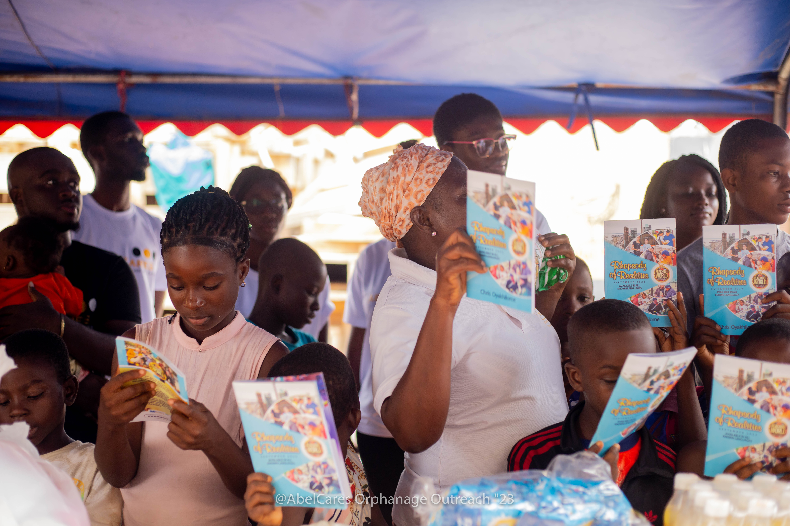
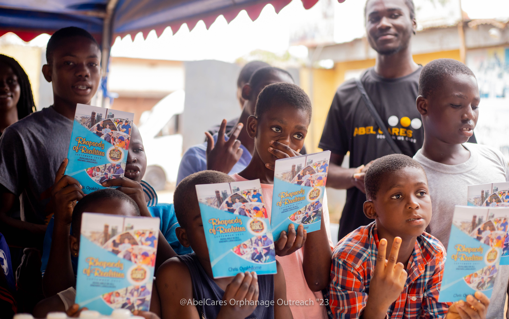
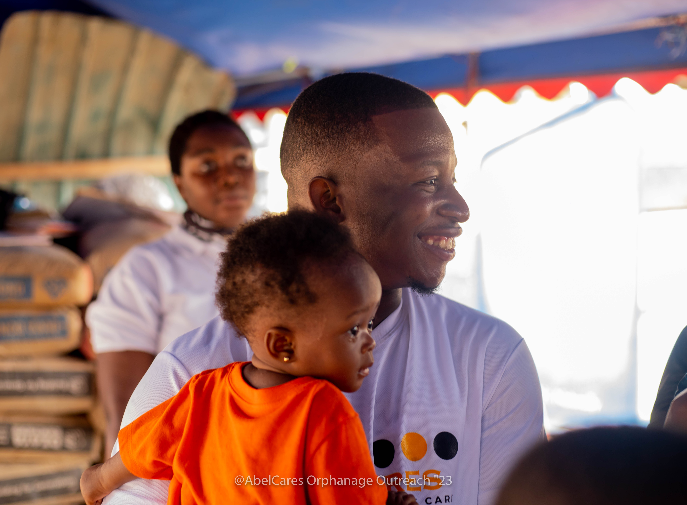

What we've done so far.
Documented field outcomes across school programs, mental health advocacy, and community support in Ghana.
Conducted across basic schools and community halls with youth facilitators.
Field case studies.
Supplies and foundational support to rural schools.
Distribution of essential classroom materials, exercise books, pencils, and foundational mentorship for schoolchildren in underserved rural communities across Ghana.

Dismantling superstition around mental distress.
A community-rooted engagement in Greater Accra addressing stigma and myths.
Working with local assembly leaders, youth groups, and families to separate treatable mental health challenges from superstition through open dialogue, educator training, and community referrals.

Milestones.

- School outreach across Ghana.
- Mental health advocacy and training in several communities.
- 1,500 young people mentored through EmpowerTalks Africa.
- Part of Autism & SEN Show Africa.
- Digital Futures programs and awareness work.
- A mental health documentary and policy advocacy campaigns.